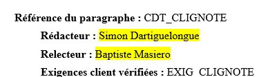
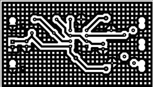
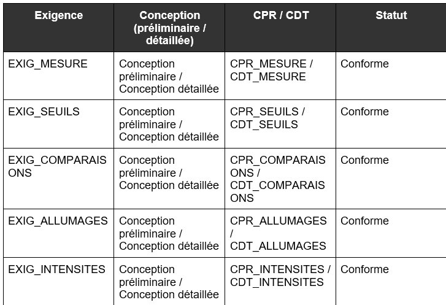
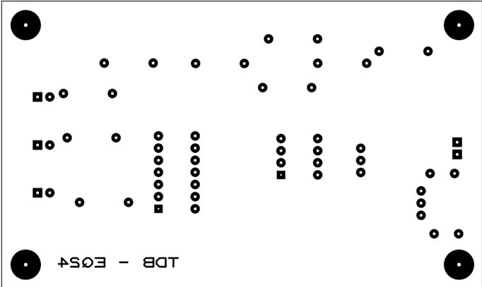
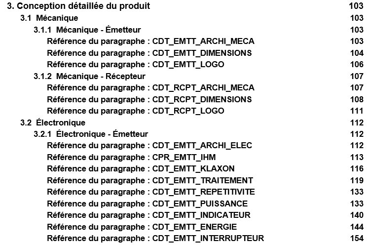
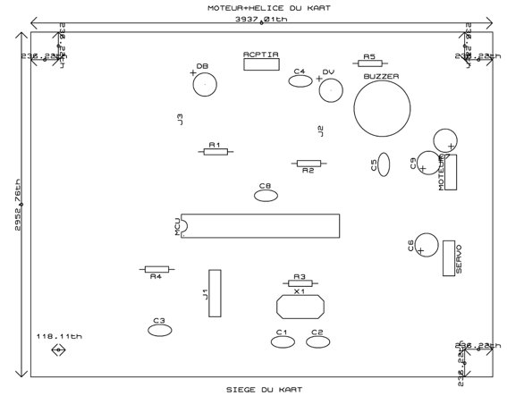

Je rédige un dossier
de conception et de fabrication
La conception ne s'arrête pas au circuit : elle doit être tracée, justifiée et transmissible. Cette compétence consiste à produire deux documents structurés — le Dossier De Conception (DDC) et le Dossier De Fabrication (DDF) — qui formalisent l'ensemble des choix techniques et permettent à un tiers de comprendre, reproduire et vérifier le produit réalisé.
BUT 1 · SAÉ S1
SLR — Système Sonore et Lumineux Rafale
Sur le DDC SLR, la conception préliminaire (paragraphes CPR_XXX) avait été rédigée par les enseignants pour poser le standard documentaire ; mon rôle s'y limitait à la relecture. Mon premier paragraphe en tant que rédacteur a été CDT_CLIGNOTE, en conception détaillée, qui répond à l'exigence EXIG_CLIGNOTE : un dispositif lumineux dont la période (1,9 s ± 20 %) et le temps d'allumage (0,1 s ± 20 %) sont imposés par le cahier des charges.
J'ai dimensionné le montage astable à NE555 à partir des formules de la datasheet, fixé le condensateur à 100 µF puis calculé les deux résistances avant de les normaliser en série E6 (22 kΩ et 1,5 kΩ). Une simulation sous ISIS m'a permis de vérifier les chronogrammes obtenus : une période de 1,73 s et un temps d'allumage de 0,103 s, soit des écarts de -8,8 % et +3,0 % par rapport aux valeurs cibles — bien dans la tolérance imposée.
Sur le Dossier De Fabrication, j'ai été seul rédacteur des trois paragraphes de la carte lumière — schéma électrique, nomenclature et typons — avec Baptiste Masiero comme relecteur. Produire ces typons m'a confronté à une exigence très concrète : le calque doit être imprimé à l'échelle 1 pour pouvoir servir de masque de gravure du circuit imprimé.

Figure 1 : Paragraphe CDT_CLIGNOTE du DDC SLR — dimensionnement du NE555

Figure 2 : Typon bottom de la carte lumière SLR (DDF)
BUT 1 · SAÉ S1
TDB — Thermomètre De Bébé
Sur le DDC TDB, j'ai coécrit avec toute l'équipe le paragraphe CPR_ARCHITECTURE, qui pose le synoptique fonctionnel du thermomètre (acquisition, traitement, action, énergie). J'ai ensuite coécrit CPR_COMPARAISONS avec Baptiste Masiero : le choix de l'amplificateur opérationnel MCP6002 pour comparer la température mesurée aux deux seuils définis, en tenant compte de la tension d'alimentation réelle du montage. J'ai par ailleurs été relecteur sur CPR_MESURE et CPR_SEUILS.
La matrice de conformité du DDC TDB synthétise cette traçabilité : chaque exigence (EXIG_MESURE, EXIG_SEUILS, EXIG_COMPARAISONS, EXIG_ALLUMAGES, EXIG_INTENSITES) y est associée à son paragraphe de conception préliminaire et détaillée, avec un statut de conformité vérifié pour chacune.
Le Dossier De Fabrication du TDB a été rédigé collectivement avec Mathis Raclet, Léandre Cyuzuzo et Baptiste Masiero : schéma électrique complet, nomenclature chiffrée, typons top et bottom de la carte double face, plan de perçage et schéma d'implantation. La carte comporte 4 perçages en 4 mm, 8 en 30th et 56 en 40th, chaque diamètre correspondant à un type de composant.

Figure 3 : Matrice de conformité du DDC TDB

Figure 4 : Typon top de la carte TDB (DDF)
BUT 1 · SAÉ S2
KAH — Kart à Hélice
Le DDC du KAH adopte une architecture documentaire bi-sous-système : l'émetteur et le récepteur disposent chacun de leurs sections — CPR_EMTT_XXX / CPR_RCPT_XXX en conception préliminaire, puis CDT_EMTT_XXX / CDT_RCPT_XXX en conception détaillée — réparties en blocs Mécanique, Électronique et Informatique. Sur ce projet, mes contributions se concentrent essentiellement sur le récepteur.
J'ai coécrit avec Mathis Raclet le paragraphe de dimensionnement de la carte récepteur, qui justifie le placement de chaque composant : connecteurs moteur et servomoteur regroupés côté droit pour limiter le survol de câbles, LEDs centrées pour rester visibles malgré l'hélice et le siège du kart, et composants d'horloge (quartz, résistance, condensateurs) regroupés au plus près du microcontrôleur.
J'ai par ailleurs coécrit avec Baptiste Masiero les paragraphes de traitement (choix et dimensionnement de l'ATmega328P), d'énergie (dimensionnement de la batterie LiPo et vérification du régulateur), de sécurité, de retentissement du klaxon et de l'interrupteur, côté récepteur. J'ai été seul rédacteur du schéma électrique détaillé du récepteur.

Figure 5 : Table des matières du DDC KAH

Figure 6 : Schéma d'implantation de la carte récepteur KAH